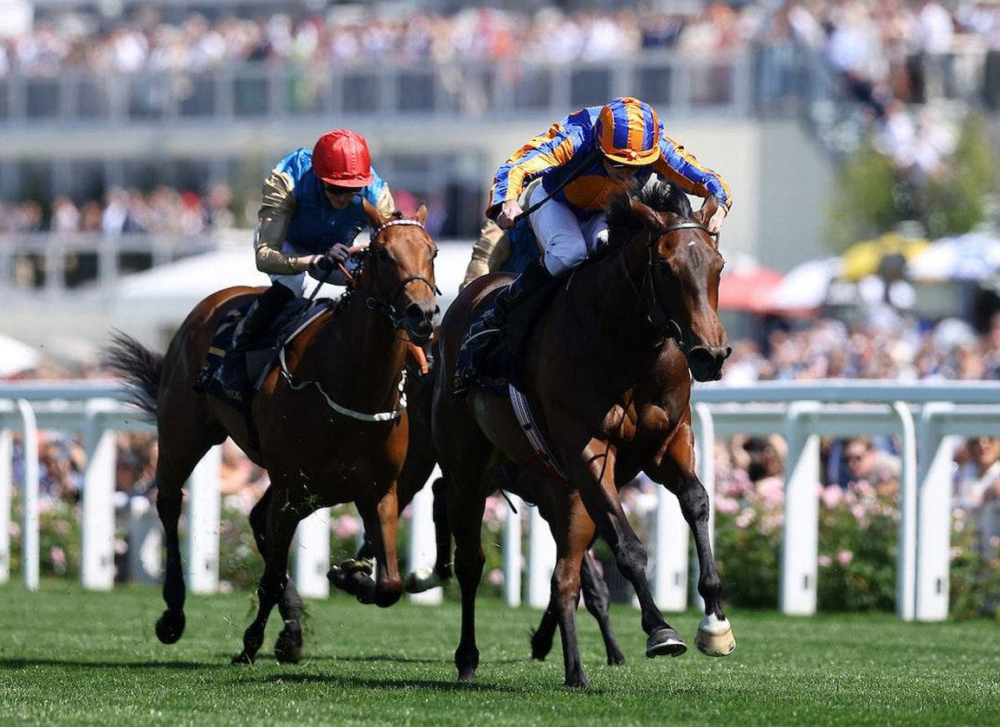

True Love y Precise reabren su duelo en el Tattersalls Irish 1.000 Guineas
Las potrancas True Love y Precise, ambas entrenadas por Aidan O'Brien en Ballydoyle, vuelven a verse las caras este domingo en el Tattersalls Irish 1.000 Guineas (Group 1) que se disputa en el Curragh. La cita es una de las grandes pruebas para tres años hembras del calendario europeo y completa el fin de semana de…

Foto: thoroughbreddailynews.com
Las potrancas True Love y Precise, ambas entrenadas por Aidan O'Brien en Ballydoyle, vuelven a verse las caras este domingo en el Tattersalls Irish 1.000 Guineas (Group 1) que se disputa en el Curragh. La cita es una de las grandes pruebas para tres años hembras del calendario europeo y completa el fin de semana de los Tattersalls Irish Guineas, que el sábado coronó a Gstaad en la versión masculina.
True Love, hija de No Nay Never, llega con el cartel reforzado tras imponerse en las 1.000 Guineas inglesas en Newmarket por delante de Precise. Ryan Moore vuelve a montarla en el Curragh tras conducirla también a la victoria en su reaparición en Leopardstown el mes pasado. Wayne Lordan toma las riendas de Precise, segunda en aquel duelo y considerada por su entrenador como una rival que aún puede dar la vuelta al resultado sobre nuevo terreno.
Las dos potrancas figuran entre las hembras de tres años mejor valoradas de Europa, lo que ha hecho que las apuestas las coloquen prácticamente empatadas en torno al 7-4. Doce participantes en total han confirmado su salida en la prueba, que tradicionalmente acaba marcando las opciones europeas en distancias de milla a milla y cuarto durante el resto de la temporada.
— Redacción de Galope al Día